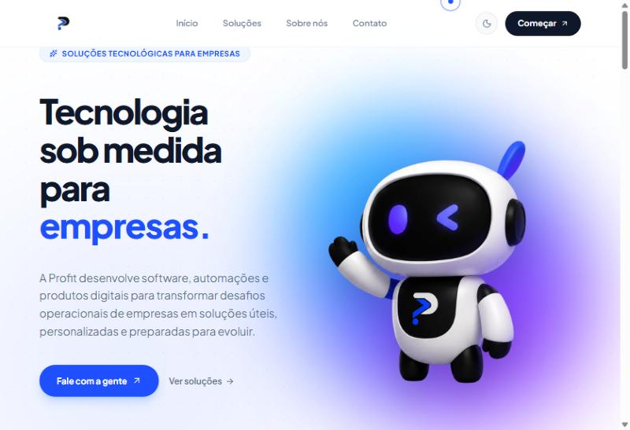

Empresa · sócio
Profit: a empresa que nasceu dos nossos hackathons.
Sou um dos sócios, com quatro amigos. Fomos campeões do Hackathon WeHandle e destaque em oratória no Hack2L, com uma plataforma que treina equipes de cobrança em simulações por voz com IA. Hoje fazemos software e automações sob medida para empresas.
